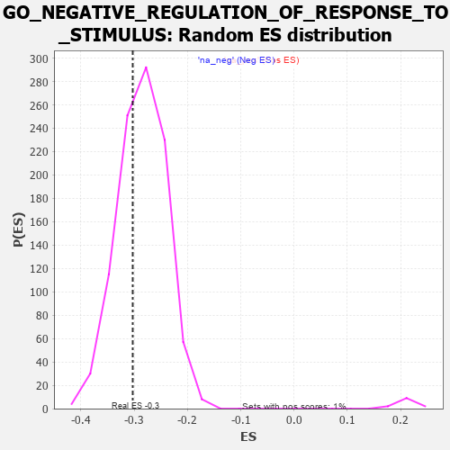

| | | Dataset | 7d |
| Phenotype | NoPhenotypeAvailable |
| Upregulated in class | na_neg |
| GeneSet | GO_NEGATIVE_REGULATION_OF_RESPONSE_TO_STIMULUS |
| Enrichment Score (ES) | -0.3027802 |
| Normalized Enrichment Score (NES) | -1.0608447 |
| Nominal p-value | 0.33535966 |
| FDR q-value | 0.79175055 |
| FWER p-Value | 1.0 |
Table: GSEA Results Summary
 Fig 1: Enrichment plot: GO_NEGATIVE_REGULATION_OF_RESPONSE_TO_STIMULUS
Fig 1: Enrichment plot: GO_NEGATIVE_REGULATION_OF_RESPONSE_TO_STIMULUS
Profile of the Running ES Score & Positions of GeneSet Members on the Rank Ordered List
| PROBE | GENE SYMBOL | GENE_TITLE | RANK IN GENE LIST | RANK METRIC SCORE | RUNNING ES | CORE ENRICHMENT | | 1 | TGFB3 | | | 49 | 2.654 | 0.0109 | No |
| 2 | IRS1 | | | 98 | 1.659 | 0.0154 | No |
| 3 | HTRA4 | | | 137 | 1.341 | 0.0192 | No |
| 4 | AXIN1 | | | 166 | 1.159 | 0.0231 | No |
| 5 | FOXF1 | | | 176 | 1.136 | 0.0293 | No |
| 6 | BCL3 | | | 202 | 1.047 | 0.0329 | No |
| 7 | RHOH | | | 228 | 0.987 | 0.0361 | No |
| 8 | DCST1 | | | 237 | 0.959 | 0.0413 | No |
| 9 | TBX20 | | | 267 | 0.880 | 0.0432 | No |
| 10 | HGF | | | 276 | 0.870 | 0.0478 | No |
| 11 | DLL1 | | | 337 | 0.760 | 0.0449 | No |
| 12 | CNOT7 | | | 348 | 0.750 | 0.0485 | No |
| 13 | GSK3A | | | 351 | 0.745 | 0.0531 | No |
| 14 | AXIN2 | | | 383 | 0.713 | 0.0537 | No |
| 15 | BAX | | | 387 | 0.711 | 0.0579 | No |
| 16 | RRN3 | | | 438 | 0.667 | 0.0558 | No |
| 17 | SUFU | | | 443 | 0.665 | 0.0596 | No |
| 18 | ERCC1 | | | 453 | 0.660 | 0.0627 | No |
| 19 | LRP1 | | | 470 | 0.648 | 0.0648 | No |
| 20 | THOC1 | | | 507 | 0.627 | 0.0642 | No |
| 21 | CNOT2 | | | 514 | 0.625 | 0.0675 | No |
| 22 | HTRA2 | | | 527 | 0.621 | 0.0700 | No |
| 23 | NLE1 | | | 565 | 0.609 | 0.0691 | No |
| 24 | NOC2L | | | 647 | 0.578 | 0.0623 | No |
| 25 | FST | | | 698 | 0.560 | 0.0594 | No |
| 26 | NOTUM | | | 726 | 0.553 | 0.0595 | No |
| 27 | AMFR | | | 856 | 0.518 | 0.0460 | No |
| 28 | IGBP1 | | | 869 | 0.514 | 0.0478 | No |
| 29 | HMGB2 | | | 892 | 0.507 | 0.0482 | No |
| 30 | NLK | | | 911 | 0.504 | 0.0492 | No |
| 31 | PDCD4 | | | 941 | 0.497 | 0.0486 | No |
| 32 | DVL3 | | | 971 | 0.490 | 0.0480 | No |
| 33 | MEN1 | | | 1003 | 0.483 | 0.0471 | No |
| 34 | AKT1 | | | 1040 | 0.476 | 0.0455 | No |
| 35 | YAP1 | | | 1041 | 0.475 | 0.0486 | No |
| 36 | TAF9 | | | 1046 | 0.475 | 0.0512 | No |
| 37 | SRC | | | 1128 | 0.459 | 0.0436 | No |
| 38 | NCK2 | | | 1131 | 0.458 | 0.0463 | No |
| 39 | PSMD7 | | | 1152 | 0.454 | 0.0467 | No |
| 40 | PSMD2 | | | 1181 | 0.450 | 0.0460 | No |
| 41 | KCTD6 | | | 1213 | 0.444 | 0.0448 | No |
| 42 | PARL | | | 1290 | 0.432 | 0.0377 | No |
| 43 | UBR2 | | | 1334 | 0.423 | 0.0348 | No |
| 44 | KPTN | | | 1341 | 0.422 | 0.0368 | No |
| 45 | RBX1 | | | 1445 | 0.401 | 0.0260 | No |
| 46 | OTUD3 | | | 1450 | 0.400 | 0.0281 | No |
| 47 | VASN | | | 1459 | 0.398 | 0.0296 | No |
| 48 | TIMP2 | | | 1478 | 0.394 | 0.0298 | No |
| 49 | SOCS6 | | | 1560 | 0.381 | 0.0217 | No |
| 50 | FZD1 | | | 1574 | 0.379 | 0.0225 | No |
| 51 | PTPRT | | | 1578 | 0.378 | 0.0246 | No |
| 52 | NPRL3 | | | 1592 | 0.375 | 0.0253 | No |
| 53 | DERL2 | | | 1632 | 0.368 | 0.0226 | No |
| 54 | BRAP | | | 1660 | 0.363 | 0.0215 | No |
| 55 | BACE1 | | | 1673 | 0.360 | 0.0222 | No |
| 56 | WWOX | | | 1688 | 0.359 | 0.0228 | No |
| 57 | HYOU1 | | | 1692 | 0.358 | 0.0247 | No |
| 58 | TLE4 | | | 1775 | 0.341 | 0.0162 | No |
| 59 | STRAP | | | 1793 | 0.339 | 0.0162 | No |
| 60 | FNIP1 | | | 1798 | 0.338 | 0.0179 | No |
| 61 | PSMD4 | | | 1811 | 0.335 | 0.0185 | No |
| 62 | ABR | | | 1812 | 0.335 | 0.0207 | No |
| 63 | GATA4 | | | 1837 | 0.330 | 0.0197 | No |
| 64 | OTUB1 | | | 1857 | 0.326 | 0.0193 | No |
| 65 | PSMD6 | | | 1858 | 0.326 | 0.0215 | No |
| 66 | SMAD4 | | | 1860 | 0.326 | 0.0235 | No |
| 67 | TLE3 | | | 1863 | 0.325 | 0.0253 | No |
| 68 | NUP62 | | | 1871 | 0.324 | 0.0265 | No |
| 69 | NCOA5 | | | 1884 | 0.322 | 0.0270 | No |
| 70 | CUL3 | | | 1893 | 0.321 | 0.0281 | No |
| 71 | RAF1 | | | 2011 | 0.303 | 0.0148 | No |
| 72 | VPS25 | | | 2033 | 0.300 | 0.0140 | No |
| 73 | IRF4 | | | 2054 | 0.298 | 0.0133 | No |
| 74 | BMP7 | | | 2107 | 0.290 | 0.0084 | No |
| 75 | JADE1 | | | 2141 | 0.286 | 0.0060 | No |
| 76 | PSME4 | | | 2143 | 0.285 | 0.0077 | No |
| 77 | NPRL2 | | | 2184 | 0.278 | 0.0043 | No |
| 78 | MEIS3 | | | 2188 | 0.278 | 0.0057 | No |
| 79 | C1QBP | | | 2189 | 0.278 | 0.0075 | No |
| 80 | ATAD5 | | | 2197 | 0.277 | 0.0084 | No |
| 81 | TRAP1 | | | 2219 | 0.274 | 0.0075 | No |
| 82 | WTIP | | | 2228 | 0.272 | 0.0082 | No |
| 83 | PSMF1 | | | 2251 | 0.268 | 0.0071 | No |
| 84 | XRCC1 | | | 2287 | 0.262 | 0.0042 | No |
| 85 | REST | | | 2308 | 0.259 | 0.0033 | No |
| 86 | MIF | | | 2357 | 0.252 | -0.0014 | No |
| 87 | HIPK2 | | | 2389 | 0.247 | -0.0038 | No |
| 88 | MET | | | 2430 | 0.240 | -0.0075 | No |
| 89 | KDM1A | | | 2447 | 0.237 | -0.0080 | No |
| 90 | UBXN1 | | | 2467 | 0.232 | -0.0090 | No |
| 91 | UBAC2 | | | 2488 | 0.229 | -0.0101 | No |
| 92 | PSMD5 | | | 2560 | 0.218 | -0.0179 | No |
| 93 | PIAS2 | | | 2581 | 0.215 | -0.0191 | No |
| 94 | GRB14 | | | 2666 | 0.204 | -0.0288 | No |
| 95 | ZGPAT | | | 2694 | 0.200 | -0.0310 | No |
| 96 | PHB2 | | | 2712 | 0.197 | -0.0319 | No |
| 97 | SLIT2 | | | 2724 | 0.195 | -0.0321 | No |
| 98 | RORA | | | 2730 | 0.193 | -0.0315 | No |
| 99 | FER | | | 2803 | 0.183 | -0.0397 | No |
| 100 | PHF14 | | | 2838 | 0.178 | -0.0430 | No |
| 101 | MTM1 | | | 2893 | 0.168 | -0.0489 | No |
| 102 | ACVR1 | | | 2932 | 0.161 | -0.0529 | No |
| 103 | SOCS4 | | | 2953 | 0.157 | -0.0544 | No |
| 104 | RTEL1 | | | 3010 | 0.148 | -0.0608 | No |
| 105 | WNT4 | | | 3023 | 0.146 | -0.0614 | No |
| 106 | MARK3 | | | 3031 | 0.145 | -0.0614 | No |
| 107 | PIAS4 | | | 3034 | 0.145 | -0.0607 | No |
| 108 | UFL1 | | | 3041 | 0.144 | -0.0605 | No |
| 109 | BIRC6 | | | 3047 | 0.143 | -0.0603 | No |
| 110 | PROS1 | | | 3070 | 0.141 | -0.0622 | No |
| 111 | HDAC1 | | | 3086 | 0.138 | -0.0633 | No |
| 112 | CHP1 | | | 3089 | 0.138 | -0.0626 | No |
| 113 | GPX1 | | | 3109 | 0.135 | -0.0642 | No |
| 114 | MTMR2 | | | 3126 | 0.133 | -0.0655 | No |
| 115 | OGG1 | | | 3135 | 0.132 | -0.0656 | No |
| 116 | SFRP5 | | | 3154 | 0.129 | -0.0671 | No |
| 117 | PSMD9 | | | 3179 | 0.125 | -0.0695 | No |
| 118 | SMAD3 | | | 3303 | 0.105 | -0.0848 | No |
| 119 | RFX4 | | | 3334 | 0.099 | -0.0881 | No |
| 120 | TLDC2 | | | 3349 | 0.097 | -0.0893 | No |
| 121 | SMAD7 | | | 3369 | 0.093 | -0.0912 | No |
| 122 | DDX3X | | | 3388 | 0.091 | -0.0929 | No |
| 123 | TRAIP | | | 3408 | 0.088 | -0.0948 | No |
| 124 | SARM1 | | | 3432 | 0.086 | -0.0973 | No |
| 125 | CNOT1 | | | 3473 | 0.081 | -0.1020 | No |
| 126 | HGS | | | 3476 | 0.080 | -0.1017 | No |
| 127 | GLI1 | | | 3489 | 0.079 | -0.1028 | No |
| 128 | RGS8 | | | 3490 | 0.079 | -0.1023 | No |
| 129 | UBR5 | | | 3518 | 0.074 | -0.1053 | No |
| 130 | HDAC3 | | | 3528 | 0.072 | -0.1060 | No |
| 131 | PIN1 | | | 3543 | 0.069 | -0.1074 | No |
| 132 | GPR18 | | | 3578 | 0.063 | -0.1114 | No |
| 133 | TNS2 | | | 3588 | 0.062 | -0.1122 | No |
| 134 | CBL | | | 3621 | 0.056 | -0.1160 | No |
| 135 | ABCD1 | | | 3677 | 0.047 | -0.1229 | No |
| 136 | EPN2 | | | 3691 | 0.045 | -0.1243 | No |
| 137 | NF1 | | | 3713 | 0.040 | -0.1268 | No |
| 138 | HSF1 | | | 3718 | 0.039 | -0.1270 | No |
| 139 | SYT11 | | | 3732 | 0.036 | -0.1285 | No |
| 140 | HTR1B | | | 3745 | 0.035 | -0.1298 | No |
| 141 | SKI | | | 3762 | 0.032 | -0.1317 | No |
| 142 | FEM1A | | | 3847 | 0.021 | -0.1425 | No |
| 143 | DGKZ | | | 3879 | 0.015 | -0.1465 | No |
| 144 | PPM1A | | | 3953 | 0.002 | -0.1560 | No |
| 145 | NCOR1 | | | 3961 | 0.000 | -0.1569 | No |
| 146 | IGF1R | | | 3970 | -0.002 | -0.1579 | No |
| 147 | CHMP6 | | | 3977 | -0.003 | -0.1587 | No |
| 148 | SCAI | | | 3983 | -0.005 | -0.1593 | No |
| 149 | EYA1 | | | 3987 | -0.006 | -0.1597 | No |
| 150 | VPS35 | | | 3989 | -0.006 | -0.1598 | No |
| 151 | DDAH1 | | | 4056 | -0.016 | -0.1683 | No |
| 152 | SFRP2 | | | 4065 | -0.018 | -0.1692 | No |
| 153 | ROBO2 | | | 4066 | -0.018 | -0.1691 | No |
| 154 | PDE8A | | | 4097 | -0.023 | -0.1729 | No |
| 155 | CHID1 | | | 4099 | -0.023 | -0.1728 | No |
| 156 | MTOR | | | 4114 | -0.025 | -0.1745 | No |
| 157 | ABL1 | | | 4125 | -0.027 | -0.1756 | No |
| 158 | CRK | | | 4139 | -0.031 | -0.1771 | No |
| 159 | PDX1 | | | 4179 | -0.038 | -0.1820 | No |
| 160 | SESN1 | | | 4192 | -0.041 | -0.1833 | No |
| 161 | STAM2 | | | 4193 | -0.041 | -0.1830 | No |
| 162 | ENY2 | | | 4195 | -0.041 | -0.1829 | No |
| 163 | GGT7 | | | 4200 | -0.041 | -0.1831 | No |
| 164 | FHL2 | | | 4222 | -0.046 | -0.1856 | No |
| 165 | GPC1 | | | 4238 | -0.048 | -0.1872 | No |
| 166 | PSME3 | | | 4280 | -0.056 | -0.1922 | No |
| 167 | WNT11 | | | 4282 | -0.056 | -0.1920 | No |
| 168 | RGS3 | | | 4293 | -0.059 | -0.1929 | No |
| 169 | USF1 | | | 4296 | -0.059 | -0.1928 | No |
| 170 | CD109 | | | 4325 | -0.064 | -0.1960 | No |
| 171 | OPA1 | | | 4330 | -0.065 | -0.1961 | No |
| 172 | ADRB2 | | | 4352 | -0.068 | -0.1984 | No |
| 173 | PRR5L | | | 4418 | -0.080 | -0.2064 | No |
| 174 | SYVN1 | | | 4454 | -0.085 | -0.2104 | No |
| 175 | ERCC6 | | | 4464 | -0.087 | -0.2110 | No |
| 176 | LRRK2 | | | 4467 | -0.087 | -0.2107 | No |
| 177 | SOCS7 | | | 4509 | -0.096 | -0.2154 | No |
| 178 | WNT5B | | | 4517 | -0.098 | -0.2157 | No |
| 179 | APC | | | 4558 | -0.107 | -0.2202 | No |
| 180 | RGS6 | | | 4559 | -0.107 | -0.2195 | No |
| 181 | RGS7 | | | 4565 | -0.108 | -0.2194 | No |
| 182 | SNX25 | | | 4606 | -0.119 | -0.2239 | No |
| 183 | ADTRP | | | 4612 | -0.120 | -0.2238 | No |
| 184 | GATA3 | | | 4614 | -0.120 | -0.2231 | No |
| 185 | DLG5 | | | 4619 | -0.121 | -0.2228 | No |
| 186 | ITPR1 | | | 4661 | -0.130 | -0.2273 | No |
| 187 | FBLN1 | | | 4748 | -0.149 | -0.2376 | No |
| 188 | ITFG2 | | | 4796 | -0.156 | -0.2427 | No |
| 189 | TERT | | | 4801 | -0.157 | -0.2422 | No |
| 190 | PLCL2 | | | 4807 | -0.159 | -0.2418 | No |
| 191 | FBXW7 | | | 4816 | -0.161 | -0.2418 | No |
| 192 | TAOK3 | | | 4823 | -0.162 | -0.2416 | No |
| 193 | EIF3A | | | 4842 | -0.167 | -0.2428 | No |
| 194 | DLG1 | | | 4860 | -0.169 | -0.2439 | No |
| 195 | ULK3 | | | 4873 | -0.171 | -0.2444 | No |
| 196 | CLU | | | 4889 | -0.174 | -0.2452 | No |
| 197 | SLIT3 | | | 4890 | -0.175 | -0.2441 | No |
| 198 | FZD4 | | | 4940 | -0.186 | -0.2493 | No |
| 199 | PRKDC | | | 4955 | -0.189 | -0.2499 | No |
| 200 | KLF4 | | | 5005 | -0.198 | -0.2550 | No |
| 201 | PDPK1 | | | 5043 | -0.207 | -0.2584 | No |
| 202 | DRD2 | | | 5088 | -0.221 | -0.2627 | No |
| 203 | MMP9 | | | 5108 | -0.227 | -0.2637 | No |
| 204 | FLCN | | | 5140 | -0.235 | -0.2663 | No |
| 205 | ASH1L | | | 5203 | -0.248 | -0.2727 | No |
| 206 | RGS22 | | | 5208 | -0.249 | -0.2716 | No |
| 207 | ATM | | | 5210 | -0.249 | -0.2702 | No |
| 208 | MGRN1 | | | 5250 | -0.257 | -0.2736 | No |
| 209 | PTEN | | | 5262 | -0.261 | -0.2733 | No |
| 210 | EPHA4 | | | 5273 | -0.265 | -0.2729 | No |
| 211 | CELF4 | | | 5275 | -0.266 | -0.2713 | No |
| 212 | MAGI2 | | | 5295 | -0.269 | -0.2720 | No |
| 213 | RAB7A | | | 5302 | -0.271 | -0.2710 | No |
| 214 | EPN1 | | | 5304 | -0.272 | -0.2694 | No |
| 215 | CD9 | | | 5319 | -0.277 | -0.2694 | No |
| 216 | NPY2R | | | 5331 | -0.281 | -0.2690 | No |
| 217 | SGK3 | | | 5338 | -0.282 | -0.2680 | No |
| 218 | TCF21 | | | 5340 | -0.283 | -0.2662 | No |
| 219 | LMO3 | | | 5342 | -0.283 | -0.2645 | No |
| 220 | GRIN1 | | | 5381 | -0.291 | -0.2676 | No |
| 221 | LATS1 | | | 5412 | -0.298 | -0.2696 | No |
| 222 | PPM1B | | | 5422 | -0.300 | -0.2688 | No |
| 223 | CBLB | | | 5445 | -0.306 | -0.2697 | No |
| 224 | LRIG2 | | | 5460 | -0.310 | -0.2695 | No |
| 225 | ACTN3 | | | 5486 | -0.315 | -0.2707 | No |
| 226 | PCBP2 | | | 5539 | -0.331 | -0.2753 | No |
| 227 | ROR2 | | | 5626 | -0.353 | -0.2843 | No |
| 228 | PSMD1 | | | 5674 | -0.367 | -0.2880 | No |
| 229 | CASP8 | | | 5678 | -0.369 | -0.2860 | No |
| 230 | ADA | | | 5798 | -0.405 | -0.2989 | No |
| 231 | SNX13 | | | 5801 | -0.406 | -0.2965 | No |
| 232 | BBS4 | | | 5806 | -0.407 | -0.2944 | No |
| 233 | RGS5 | | | 5831 | -0.414 | -0.2948 | No |
| 234 | STRN3 | | | 5849 | -0.417 | -0.2943 | No |
| 235 | TKFC | | | 5854 | -0.419 | -0.2921 | No |
| 236 | ATG7 | | | 5858 | -0.420 | -0.2898 | No |
| 237 | SZT2 | | | 5882 | -0.429 | -0.2900 | No |
| 238 | STK11 | | | 5922 | -0.443 | -0.2922 | No |
| 239 | PCGF2 | | | 5943 | -0.451 | -0.2918 | No |
| 240 | RGS20 | | | 5995 | -0.471 | -0.2954 | No |
| 241 | XBP1 | | | 6011 | -0.475 | -0.2943 | No |
| 242 | CALR | | | 6077 | -0.499 | -0.2995 | Yes |
| 243 | FBN1 | | | 6080 | -0.499 | -0.2965 | Yes |
| 244 | UBB | | | 6090 | -0.503 | -0.2944 | Yes |
| 245 | IFT80 | | | 6135 | -0.515 | -0.2968 | Yes |
| 246 | STK4 | | | 6145 | -0.518 | -0.2946 | Yes |
| 247 | EGR1 | | | 6165 | -0.527 | -0.2937 | Yes |
| 248 | GRID2 | | | 6170 | -0.528 | -0.2908 | Yes |
| 249 | SMAD2 | | | 6216 | -0.541 | -0.2931 | Yes |
| 250 | MVP | | | 6223 | -0.543 | -0.2904 | Yes |
| 251 | CDC42 | | | 6236 | -0.548 | -0.2884 | Yes |
| 252 | VDAC2 | | | 6242 | -0.553 | -0.2854 | Yes |
| 253 | ELF1 | | | 6328 | -0.587 | -0.2927 | Yes |
| 254 | BBS2 | | | 6383 | -0.608 | -0.2958 | Yes |
| 255 | CSK | | | 6428 | -0.630 | -0.2974 | Yes |
| 256 | HERC4 | | | 6429 | -0.631 | -0.2933 | Yes |
| 257 | SOX2 | | | 6477 | -0.652 | -0.2952 | Yes |
| 258 | DPP4 | | | 6501 | -0.663 | -0.2939 | Yes |
| 259 | PLIN5 | | | 6524 | -0.672 | -0.2924 | Yes |
| 260 | DYRK2 | | | 6533 | -0.677 | -0.2890 | Yes |
| 261 | KANK1 | | | 6536 | -0.678 | -0.2848 | Yes |
| 262 | OTOP1 | | | 6562 | -0.690 | -0.2836 | Yes |
| 263 | ROBO1 | | | 6577 | -0.699 | -0.2809 | Yes |
| 264 | SCYL2 | | | 6621 | -0.724 | -0.2818 | Yes |
| 265 | WWTR1 | | | 6631 | -0.729 | -0.2782 | Yes |
| 266 | PTPRS | | | 6646 | -0.738 | -0.2752 | Yes |
| 267 | RFFL | | | 6674 | -0.749 | -0.2739 | Yes |
| 268 | CERS2 | | | 6689 | -0.756 | -0.2708 | Yes |
| 269 | EGFR | | | 6708 | -0.765 | -0.2681 | Yes |
| 270 | GSK3B | | | 6719 | -0.768 | -0.2644 | Yes |
| 271 | PAQR3 | | | 6812 | -0.819 | -0.2711 | Yes |
| 272 | RGS17 | | | 6853 | -0.843 | -0.2708 | Yes |
| 273 | CBY1 | | | 6874 | -0.851 | -0.2679 | Yes |
| 274 | WIF1 | | | 6904 | -0.870 | -0.2660 | Yes |
| 275 | GHSR | | | 6937 | -0.894 | -0.2644 | Yes |
| 276 | PIM3 | | | 6964 | -0.914 | -0.2618 | Yes |
| 277 | PDE2A | | | 6985 | -0.927 | -0.2584 | Yes |
| 278 | NPHP4 | | | 6991 | -0.931 | -0.2530 | Yes |
| 279 | CCR2 | | | 7003 | -0.939 | -0.2483 | Yes |
| 280 | RNF34 | | | 7040 | -0.963 | -0.2467 | Yes |
| 281 | PIBF1 | | | 7049 | -0.966 | -0.2415 | Yes |
| 282 | RYK | | | 7102 | -1.000 | -0.2417 | Yes |
| 283 | PXDN | | | 7104 | -1.001 | -0.2353 | Yes |
| 284 | UFD1 | | | 7157 | -1.040 | -0.2354 | Yes |
| 285 | AR | | | 7169 | -1.046 | -0.2300 | Yes |
| 286 | PTPRJ | | | 7180 | -1.054 | -0.2244 | Yes |
| 287 | MFN2 | | | 7208 | -1.081 | -0.2209 | Yes |
| 288 | KLKB1 | | | 7216 | -1.090 | -0.2147 | Yes |
| 289 | CIB1 | | | 7280 | -1.152 | -0.2154 | Yes |
| 290 | PARP3 | | | 7289 | -1.158 | -0.2089 | Yes |
| 291 | GRN | | | 7319 | -1.194 | -0.2049 | Yes |
| 292 | CYLD | | | 7333 | -1.206 | -0.1988 | Yes |
| 293 | GPD1L | | | 7343 | -1.215 | -0.1920 | Yes |
| 294 | UBC | | | 7410 | -1.274 | -0.1924 | Yes |
| 295 | CD22 | | | 7534 | -1.449 | -0.1990 | Yes |
| 296 | DCC | | | 7550 | -1.470 | -0.1914 | Yes |
| 297 | CALM1 | | | 7567 | -1.499 | -0.1837 | Yes |
| 298 | LITAF | | | 7572 | -1.511 | -0.1744 | Yes |
| 299 | NLRC3 | | | 7574 | -1.515 | -0.1646 | Yes |
| 300 | PDCD6 | | | 7630 | -1.615 | -0.1613 | Yes |
| 301 | BOK | | | 7715 | -1.817 | -0.1604 | Yes |
| 302 | PDE4D | | | 7764 | -1.944 | -0.1540 | Yes |
| 303 | PKD2 | | | 7822 | -2.167 | -0.1473 | Yes |
| 304 | TRAF2 | | | 7861 | -2.481 | -0.1361 | Yes |
| 305 | CALM3 | | | 7869 | -2.525 | -0.1206 | Yes |
| 306 | FYN | | | 7881 | -2.622 | -0.1050 | Yes |
| 307 | CHAC1 | | | 7882 | -2.633 | -0.0878 | Yes |
| 308 | CAV3 | | | 7896 | -2.739 | -0.0717 | Yes |
| 309 | FBN2 | | | 7906 | -2.873 | -0.0541 | Yes |
| 310 | PSMD3 | | | 7907 | -2.887 | -0.0353 | Yes |
| 311 | PSMD8 | | | 7931 | -3.286 | -0.0169 | Yes |
| 312 | ARRB1 | | | 7935 | -3.377 | 0.0047 | Yes |
Table: GSEA details [plain text format]

Fig 2: GO_NEGATIVE_REGULATION_OF_RESPONSE_TO_STIMULUS: Random ES distribution
Gene set null distribution of ES for GO_NEGATIVE_REGULATION_OF_RESPONSE_TO_STIMULUS